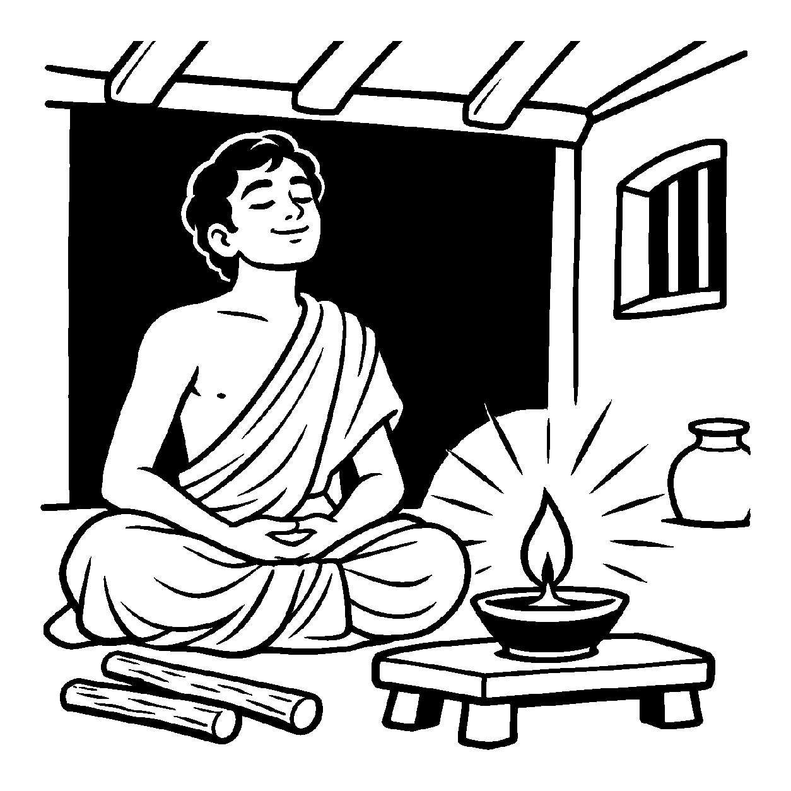

ઘોર અંધારી રાત્રે ઓરડામાં ભરાયેલા અંધકારને બહાર કાઢવા માટે કોઈ લાકડીઓ પછાડવી પડતી નથી કે સાવરણીથી વાળવું પડતું નથી; બસ એક નાનકડો દીવો પ્રગટાવતાં જ અંધકાર ક્ષણવારમાં અદૃશ્ય થઈ જાય છે. તેવી જ રીતે જ્યારે આત્મા પોતાના શુદ્ધ ચૈતન્યભાવ (શુદ્ધોપયોગ) માં લીન થાય છે, ત્યારે તે શુદ્ધ પરિણામના સામર્થ્યથી અનાદિના કર્મો આપોઆપ ખરી પડે છે — તે શુદ્ધ દશાને જોવી તે 'શુદ્ધભાવનિરપેક્ષ શુદ્ધ દ્રવ્યાર્થિકનય' છે.
નય ૨૪.૧ માં કેવળ ઉપાધિના અભાવની વાત હતી, જ્યારે આ નય તેના મૂળ વિધાયક કારણને પકડે છે. જૈન સિદ્ધાંત કહે છે કે કર્મ જડ છે, તે પોતાની મેળે હટતું નથી. જ્યારે ચેતન આત્મા પોતાના સ્વરૂપમાં સ્થિર થઈને અપ્રમત્ત શુદ્ધ પરિણામ ધારણ કરે છે, ત્યારે તે શુદ્ધભાવના પ્રતાપે અનંત કર્મોની સ્થિતિ અને અનુભાગ બળીને ભસ્મ થઈ જાય છે.
આ નય સાધનાનું પરમ રહસ્ય ખોલે છે: તારે કર્મો સામે કોઈ હિંસક યુદ્ધ લડવાનું નથી; તું કેવળ તારા શુદ્ધ ચૈતન્યસ્વભાવમાં લીન થઈ જા, કર્મો સ્વયં ખરી પડશે!
શુદ્ધ ભાવનો દીપ પ્રગટે, કર્મ તિમિર પળમાં પળાય;
શુદ્ધ પરિણતિ નય વડે, મોક્ષપંથ સહજ સધાય.
વર્તમાન વિભાવ અને દોષોને સ્વીકારીને પ્રમાદ ત્યજી આત્મશુદ્ધિના પુરુષાર્થમાં સદા જાગ્રત થવું.

વનમાં કુટીર બનાવીને તપશ્ચર્યા કરતો એક યુવાન સાધક સોમશર્મા રાત-દિવસ કર્મો સામે ઝઝૂમી રહ્યો હતો. તે મનમાં સતત લડતો: "મારે આ ક્રોધને મારવો છે, આ મોહને કાપી નાખવો છે, આ કર્મોનો નાશ કરવો છે!" તે દિવસ-રાત કર્મોના વિચારોમાં એટલો ડૂબેલો રહેતો કે તેનું ચિત્ત સતત તંગ અને અશાંત રહેતું. તે જેટલો કર્મોને દૂર કરવાનો પ્રયત્ન કરતો, તેટલા જ જૂના સંસ્કારો વધુ જોરથી ઉછળતા હતા! કર્મો સાથેની આ સતત હિંસક લડાઈથી તે થાકીને લોથપોથ થઈ ગયો. તેનું મન ચિડચિડું બની ગયું અને તે હતાશ થઈને પોકારી ઊઠ્યો: "આ કર્મોની અસુર સેના સામે લડતાં લડતાં મારો દમ ઘૂંટાય છે, આમાંથી મુક્ત થવાનો સાચો સહજ ઉપાય કયો?"
તે સમયે ત્યાંથી વિહાર કરતા એક પરમ શાંત જ્ઞાની મુનિરાજ તેની કુટીરમાં પધાર્યા. તેમણે સોમશર્માને એક અંધારી ઓરડીમાં લઈ જઈ એક લાકડી આપી અને કહ્યું, "સોમશર્મા, આ ઓરડીમાંથી અંધકારને લાકડીઓ મારીને બહાર કાઢી આપ." સોમશર્માએ બે કલાક સુધી લાકડીઓ પછાડી, પણ અંધકાર તસુભાર પણ ખસ્યો નહીં! થાકીને તેણે કહ્યું, "ગુરુદેવ, લાકડીથી અંધકાર કેમ જાય?" ત્યારે મુનિશ્રીએ એક નાનો ઘીનો દીવો પ્રગટાવ્યો. દીવો પ્રગટતાં જ ઓરડી દિવ્ય પ્રકાશથી ઝળહળી ઊઠી અને અંધકાર ક્યાંય ગાયબ થઈ ગયો! મુનિશ્રીએ સ્નેહથી કહ્યું, "વત્સ, શુદ્ધભાવનિરપેક્ષ શુદ્ધ દ્રવ્યાર્થિકનયને સમજ. તું અજ્ઞાનવશ કર્મો સાથે લાકડીઓ પછાડી રહ્યો છે! કર્મો સામે લડવાનું બંધ કર અને તારા અંતરમાં શુદ્ધ આત્મભાવનો દીવો પ્રગટાવ. તું જેવો તારા શુદ્ધ જ્ઞાનસ્વરૂપમાં લીન થઈશ, તેવા જ અનંત ભવોના કર્મો પળવારમાં ખરી પડશે." આ દિવ્ય બોધામૃતનું પાન કરતાં જ સોમશર્માનો સંઘર્ષ સમાપ્ત થઈ ગયો. તેના અંતરમાં સહજ શુદ્ધોપયોગનો દીવો પ્રગટી ઊઠ્યો અને તે પરમ વિશ્રામ પામ્યો.
જો આ નય કદાગ્રહ બને, તો મનુષ્ય વ્યવહારિક સાધના અને તપશ્ચર્યાની ઉપેક્ષા કરીને કેવળ વાતોના વડાં કરવા લાગે છે. આવી એકાંત જડતાથી જીવ વર્તમાન વ્યવહારિક સાધના અને કર્તવ્યોની ઉપેક્ષા કરી બેસે છે અને ક્રમિક પરિણામોને સુધાર્યા વિના અકાળે પૂર્ણતાના મિથ્યા સંતોષમાં રાચે છે.
આ જ નય જ્યારે સમન્વયશીલ બને છે, ત્યારે તે સાધકને બાહ્ય સંઘર્ષોમાંથી મુક્ત કરી અંતરંગ શુદ્ધ ચૈતન્યભાવમાં સ્થિર થવાનો પરમ સહજ રાજમાર્ગ બતાવે છે.